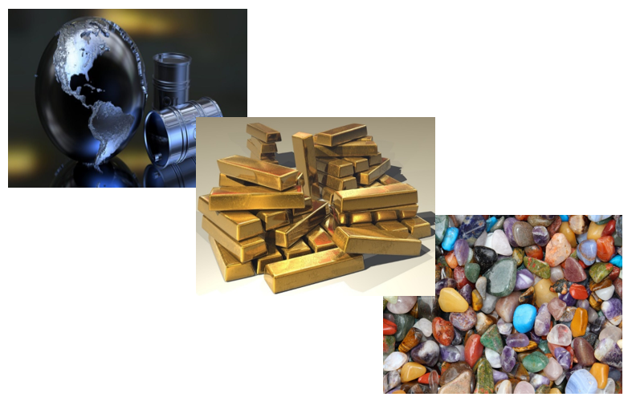

- Los recursos naturales no renovables existen en cantidades determinadas, no pueden aumentar con el paso del tiempo.
- Algunos de los recursos naturales no renovables:
| Recursos | Descripción |
| Minerales | Hace algunos años, se prestaba poca atención a la conservación de los minerales, porque se pensaba que había suficiente para varios siglos y no había manera de protegerlos, pero esto fue erróneo. |
| Petróleo | Es un recurso natural indispensable en el mundo moderno. En primer lugar, el petróleo es actualmente energético más importante del planeta. |
| Metales | Se distribuyen por el mundo en forma irregular, por ejemplo: algunos países tienen más plata, mientras que otros tiene más cantidad de oro. |